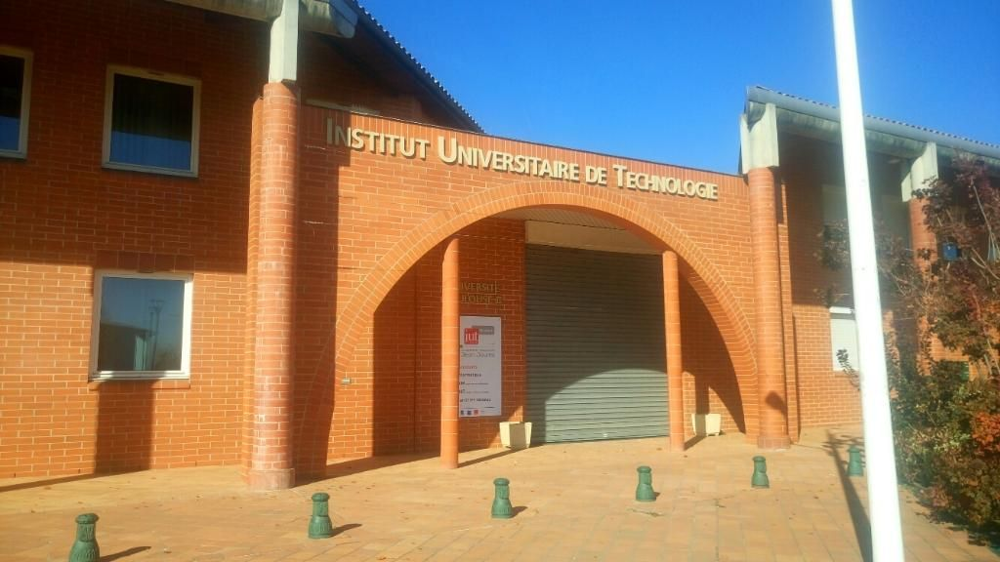

Mon CV
Mon parcours scolaire
bac général au lycée polyvalent Astier
actuellement en première anée de BUT Informatique à l'IUT de Blagnac
Lycée Astier

IUT de Blagnac
Mes compétences
- maitrise des languages de programmation comme :
Python
SQL
HTML
CSS
Java
Le language SHELL

-compétences linguistiques :
Certification Cambridge en langue anglaise
L'apprentissage de l'allemand en troisième durant ma scolarité
- autres compétences :
L'apprentissage rapide
la créativité
Le sens du travail d'équipe
Mes experiences
J'ai effectué mon stage de troisième dans une entreprise de fournitures de bureau. J'ai donc pu utiliser des logiciels de comptabilité
Sud Bureau, l'entreprise où j'ai effectué mon stage
J'ai pu communiquer avec un informatitien de mon entourage ayant créé une Intelligence Artificielle.
Logo de l'Intelligence Artificielle FAUNiA valorisant l'environnement
Mon parcours scolaire m'a orienté sur l'innformatique m'a permis de prendre de l'expérience dans ce domaine